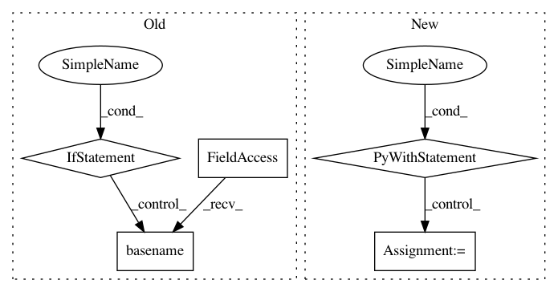

1b3b9965c20e4d0fd6541182705b7fb2b4b669bc,mlflow/spark.py,,save_model,#Any#Any#Any#Any#Any#Any#Any#,157
Before Change
_HadoopFileSystem.copy_to_local_file(tmp_path, sparkml_data_path, remove_src=True)
pyspark_version = pyspark.version.__version__
model_conda_env = None
if conda_env:
model_conda_env = os.path.basename(os.path.abspath(conda_env))
shutil.copyfile(conda_env, os.path.join(path, model_conda_env))
mlflow_model.add_flavor(FLAVOR_NAME, pyspark_version=pyspark_version,
model_data=sparkml_data_path_sub)
pyfunc.add_to_model(mlflow_model, loader_module="mlflow.spark", data=sparkml_data_path_sub,
env=model_conda_env)
After Change
if conda_env is not None:
shutil.copyfile(conda_env, os.path.join(path, conda_env_subpath))
else:
with open(os.path.join(path, conda_env_subpath), "w") as f:
yaml.safe_dump(DEFAULT_CONDA_ENV, stream=f, default_flow_style=False)
mlflow_model.add_flavor(FLAVOR_NAME, pyspark_version=pyspark_version,
model_data=sparkml_data_path_sub)
pyfunc.add_to_model(mlflow_model, loader_module="mlflow.spark", data=sparkml_data_path_sub,
env=conda_env_subpath)
In pattern: SUPERPATTERN
Frequency: 3
Non-data size: 5
Instances
Project Name: mlflow/mlflow
Commit Name: 1b3b9965c20e4d0fd6541182705b7fb2b4b669bc
Time: 2018-11-12
Author: 39497902+dbczumar@users.noreply.github.com
File Name: mlflow/spark.py
Class Name:
Method Name: save_model
Project Name: vatlab/SoS
Commit Name: f5487e3b76129b97f29365058d169c72cb37e3cf
Time: 2017-02-14
Author: ben.bog@gmail.com
File Name: sos/sos_step.py
Class Name:
Method Name: execute_task
Project Name: mlflow/mlflow
Commit Name: c67c1826c2776b97d3f2b4a38cd864329d15f480
Time: 2018-11-10
Author: 39497902+dbczumar@users.noreply.github.com
File Name: mlflow/sklearn.py
Class Name:
Method Name: save_model